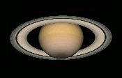
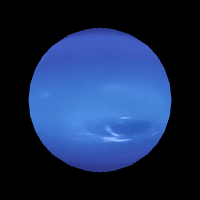

Układ Słoneczny - czym jest i ogólne informacje
Jest to układ planetarny w Drodze Mlecznej, składający się ze Słońca i
powiązanych z nim grawitacyjnie ciał niebieskich: ośmiu planet, co najmniej 205
ich księżyców, pięciu planet karłowatych i miliardów (a być może nawet bilionów)
małych ciał, do których zalicza się planetoidy, komety i meteoroidy, a także pył międzyplanetarny.
Zbadane regiony Układu Słonecznego zawierają, licząc od Słońca: cztery planety skaliste (Merkury,
Wenus, Ziemia, Mars), pas planetoid składający się z małych skalistych ciał, cztery zewnętrzne gazowe
olbrzymy (Jowisz, Saturn, Uran, Neptun) oraz drugi pas składający się z obiektów skalno-lodowych, tak
zwany Pas Kuipera. Za Pasem Kuipera znajduje się dysk rozproszony, dużo dalej heliopauza i w końcu
hipotetyczny Obłok Oorta. Pięć obiektów zaliczonych do klasy planet karłowatych to: Ceres (największy
obiekt w pasie planetoid), Pluton (do 24 sierpnia 2006 roku uznawany za 9. planetę Układu), Haumea,
Makemake (drugi co do wielkości obiekt w Pasie Kuipera) i Eris (największy znany obiekt w dysku rozproszonym).
Układ słoneczny
Położenie środka ciężkości Układu Słonecznego względem Słońca w latach 1945-1995
Centrum Układu Słonecznego stanowi Słońce, gwiazda ciągu głównego typu widmowego G2,
która zawiera 99,86% znanej masy Układu i dominuje w nim grawitacyjnie. Jowisz i
Saturn, dwa największe ciała orbitujące wokół Słońca, stanowią więcej niż 90% pozostałej
masy układu.
Większość orbit dużych ciał krążących wokół Słońca położona jest blisko płaszczyzny orbity ziemskiej, zwanej ekliptyką, podczas gdy orbity komet i obiektów Pasa Kuipera są zwykle nachylone pod większym kątem do ekliptyki.
Wszystkie planety i większość innych ciał okrążają Słońce zgodnie z kierunkiem jego własnej rotacji (przeciwnej do wskazówek zegara, patrząc z góry na biegun północny Słońca). Istnieją też wyjątki takie jak Kometa Halleya.
Większość orbit dużych ciał krążących wokół Słońca położona jest blisko płaszczyzny orbity ziemskiej, zwanej ekliptyką, podczas gdy orbity komet i obiektów Pasa Kuipera są zwykle nachylone pod większym kątem do ekliptyki.
Wszystkie planety i większość innych ciał okrążają Słońce zgodnie z kierunkiem jego własnej rotacji (przeciwnej do wskazówek zegara, patrząc z góry na biegun północny Słońca). Istnieją też wyjątki takie jak Kometa Halleya.
Ciała niebieskie Układu Słonecznego
Słońce
Duża masa Słońca umożliwiła uzyskanie wystarczająco wysokiej temperatury, by mogła zachodzić reakcja termojądrowa, uwalniająca ogromne ilości energii, która jest wysyłana w przestrzeń w większości jako promieniowanie elektromagnetyczne, w tym światło widzialne. Gwiazdy porządkuje się na diagramie Hertzsprunga-Russella, na którym umieszcza się je według jasności absolutnej i temperatury powierzchni. Słońce jest klasyfikowane jako umiarkowanie duży żółty karzeł, jednak ta nazwa może być myląca, ponieważ - w porównaniu do innych gwiazd w Galaktyce - Słońce jest raczej duże i jasne. Większość gwiazd na diagramie Hertzsprunga-Russella położona jest w obszarze nazywanym ciągiem głównym; Słońce leży właśnie pośrodku tego obszaru. Gwiazdy jaśniejsze i gorętsze od Słońca występują rzadko. Gwiazdy ciemniejsze i chłodniejsze są powszechne. Miejsce Słońca w ciągu głównym określa je jako gwiazdę w „sile wieku”. Nie wyczerpało ono jeszcze zapasu wodoru niezbędnego do reakcji termojądrowej. W miarę postępowania przemiany wodoru w hel Słońce staje się coraz jaśniejsze. We wcześniejszych etapach życia gwiazdy, jasność Słońca wynosiła 75% obecnej jasności.
Słońce
Merkury
Merkury jest najbliższą Słońca i najmniejszą planetą (0,055 masy Ziemi). Merkury nie ma naturalnych satelitów, a jedyne znane jego cechy geologiczne oprócz kraterów uderzeniowych to obłe grzbiety i urwiska, prawdopodobnie powstałe w okresie kurczenia się jego stygnącego wnętrza we wczesnej historii planety. Merkury prawie w ogóle nie ma atmosfery, gdyż jest ona „zdmuchiwana” przez wiatr słoneczny. Nie wiadomo dokładnie jak ukształtowały się jego stosunkowo duże żelazne jądro i cienki płaszcz. Według części hipotez jego zewnętrzne warstwy zostały zdarte przez ogromne uderzenie i to spowodowało, że nie rozrósł się w pełni, będąc pod wpływem promieniowania młodego Słońca.
Merkury
Wenus
Wenus jest zbliżona rozmiarami do Ziemi (0,815 masy Ziemi) i podobnie jak ona, ma gruby płynny płaszcz wokół żelaznego jądra i masywną atmosferę, 90 razy gęstszą niż ziemska. Wenus nie ma naturalnych satelitów. Jest najgorętszą planetą, o temperaturze powierzchni powyżej 400 °C, z powodu dużej zawartości gazów cieplarnianych w atmosferze. Nie ma ona pola magnetycznego, które mogłoby zapobiec uszczupleniu jej gęstej atmosfery, co sugeruje, że atmosfera jest stale uzupełniana przez aktywność wulkaniczną. Nie ma jednak innych dowodów współczesnej aktywności geologicznej na Wenus.
Wenus
Ziemia
Ziemia jest największą i najgęstszą z planet wewnętrznych, jedyną z pewnością aktywną geologicznie i jedyną znaną planetą, na której istnieje życie. Jej hydrosfera jest unikalna wśród planet skalistych. Jest także jedyną planetą gdzie została zaobserwowana tektonika płyt. Atmosfera ziemska jest odmienna od atmosfer pozostałych planet i jest wciąż kształtowana przez procesy biologiczne, dzięki którym zawiera 21% wolnego tlenu. Ma jednego naturalnego satelitę - Księżyc - jedynego dużego satelitę pośród planet skalistych w Układzie Słonecznym. Czasem wręcz określa się układ Ziemia-Księżyc jako planetę podwójną.Ziemia
Mars
Mars jest mniejszy niż Ziemia i Wenus (0,107 masy Ziemi). Ma rzadką atmosferę złożoną głównie z dwutlenku węgla. Jego powierzchnia jest usiana wieloma wulkanami takimi jak Olympus Mons i dolinami pochodzenia tektonicznego takimi jak Valles Marineris. Nie wiadomo, czy Mars wykazuje współcześnie aktywność geologiczną. Jego czerwona barwa pochodzi od gleby bogatej w tlenki żelaza. Mars ma dwa niewielkie księżyce: Fobosa i Deimosa. Mogą one być przechwyconymi planetoidami (przypominają je składem), lub mogły powstać na orbitach podobnych do dzisiejszych, na co wskazuje dynamika, np. z materii wyrzuconej przy uderzeniu dużego ciała w Marsa.
Mars
Jowisz
Jowisz ma masę równą 318 mas Ziemi, czyli 2,5 razy więcej niż wszystkie pozostałe planety Układu. Składa się w większości z wodoru i helu. Duża ilość ciepła pochodząca z wnętrza planety tworzy wiele interesujących zjawisk w jego atmosferze, takich jak równoleżnikowe pasma chmur czy Wielka Czerwona Plama. Jowisz ma 79 znanych księżyców. Cztery największe z nich, tzw. księżyce galileuszowe, wykazują podobieństwa do planet skalistych, takie jak wulkanizm i zjawiska tektoniczne. Ganimedes, największy naturalny satelita w Układzie Słonecznym, jest większy niż Merkury.
Jowisz
Saturn
Saturn słynie z szerokich i jasnych pierścieni. Pod względem budowy i składu atmosfery bardzo przypomina on Jowisza. Ma jednak bardzo małą gęstość; przy średnicy równej ok. 84% średnicy Jowisza jest ponad trzykrotnie mniej masywny. Ma 82 znane satelity. Największe spośród nich są zbudowane w dużym stopniu z lodu. Z tej grupy Tytan i Enceladus wykazują oznaki aktywności geologicznej (kriowulkanizm). Tytan jest większy niż Merkury i jest jedynym satelitą w Układzie Słonecznym, który ma gęstą atmosferę, w której zachodzą złożone zjawiska pogodowe; poza tym znajdują się na nim powierzchniowe zbiorniki (jeziora i morza) ciekłych węglowodorów. Ciśnienie atmosferyczne na jego powierzchni jest o ok. 47% większe niż na powierzchni Ziemi

Saturn
Uran
Uran, przy masie 14 mas Ziemi, jest najlżejszą z planet-olbrzymów. Jego unikalną cechą jest to, że obiega Słońce „leżąc na boku”; jego oś obrotu jest nachylona do ekliptyki pod kątem bliskim 0°. Ma także znacznie mniej aktywne jądro i wypromieniowuje mniej ciepła niż pozostałe olbrzymy[42] Uran ma 27 znanych księżyców (stan z 2 października 2018[1], spośród których największe to Tytania, Oberon, Umbriel, Ariel i Miranda).
Uran
Neptun
Neptun, chociaż nieco mniejszy od Urana, ma większą masę (równą 17 mas Ziemi) i większą gęstość. Wypromieniowuje też więcej ciepła, ale nie tak dużo jak Jowisz czy Saturn. Neptun ma 14 znanych księżyców. Największy z nich, Tryton, jest geologicznie aktywny, ma aktywne gejzery wyrzucające płynny azot. Tryton jest jedynym znanym dużym satelitą poruszającym się wokół planety ruchem wstecznym - przeciwnym niż jej ruch wirowy.

Neptun
Tabela Danych
| Obiekt | Symbol | Średnica równikowa | Masa (1021kg) | Księżyce | Rodzaj |
|---|---|---|---|---|---|
| Słońce | ☉ | ok. 1 392 000 | 1 989 100 000 | - | gwiazda |
| Merkury | ☿ | 4 879 | 330,2 | 0 | skalista |
| Wenus | ♀ | 12 104 | 4 868,5 | 0 | skalista |
| Ziemia | ♁ | 12 756 | 5 974,2 | 1 | skalista |
| Mars | ♂ | 6 805 | 641,9 | 2 | skalista |
| Jowisz | ♃ | 142 984 | 1 898 600,8 | 95 | gazowa |
| Saturn | ♄ | 120 536 | 568 516,8 | 146 | gazowa |
| Uran | ⛢ | 51 118 | 86 841 | 27 | gazowo-lodowa |
| Neptun | ♆ | 49 528 | 102 439,6 | 14 | gazowo-lodowa |